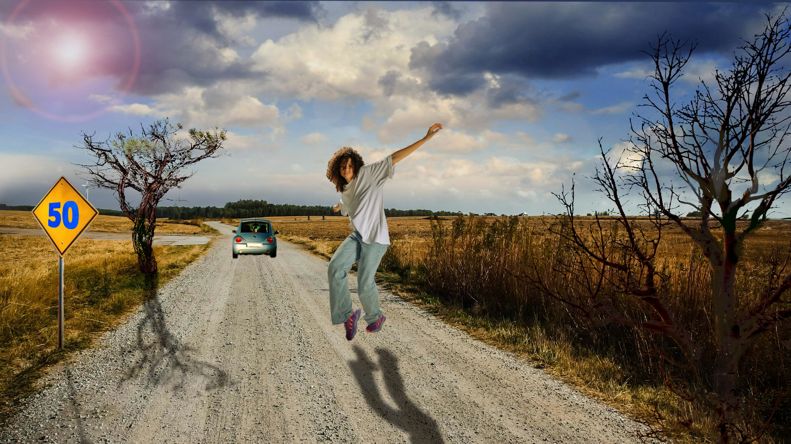
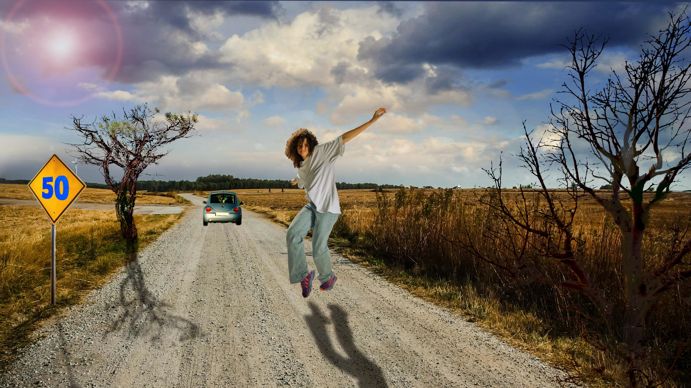
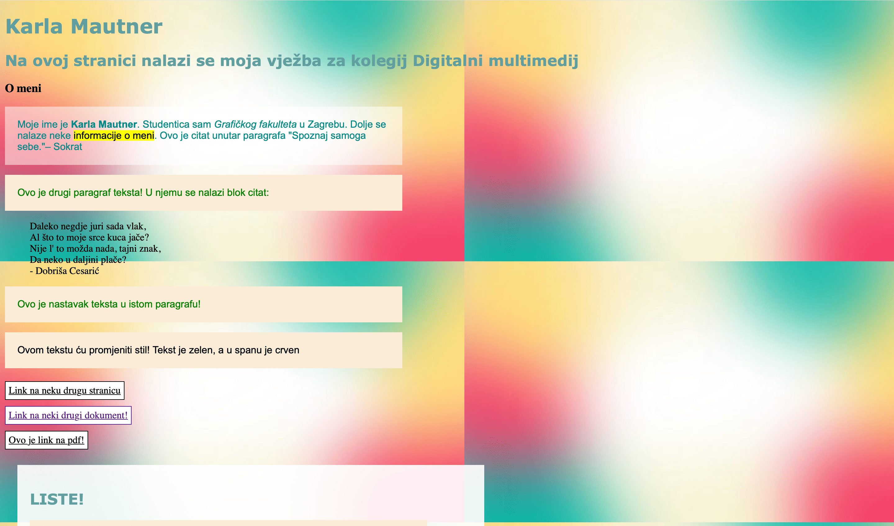
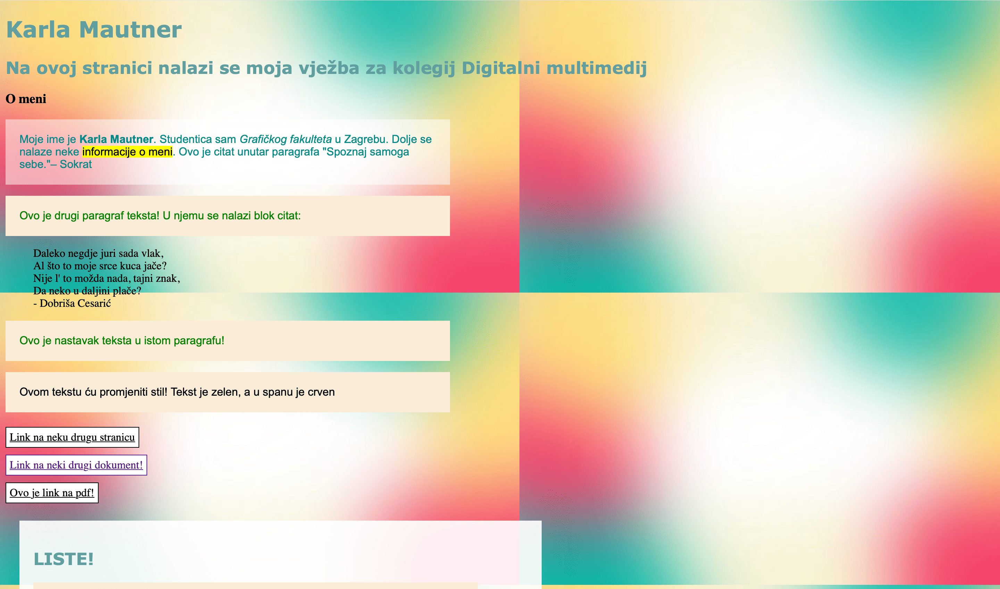

1. VJEŽBA - FontForge (1. slika)
U programu FontForge sam crtala svoj font.2. VJEŽBA - Bézierova krivulja (2. i 3. slika)
U programu Inkscape sam uz pomoć Bézierovih krivulja i maski nacrtala svoje ime i inicijale.3. VJEŽBA - Boja, transformacije, uzorci (4. i 5. slika)
U programu Inkscape sam definirala swatch boje i uz alat transformacije i rotacije nacrtala cvijet iz vježbe. Na isti način sam napravila i svoj primjer.4. VJEŽBA - Složeni objekti, gradijenti, transparencija (6. i 7. slika)
U programu Inkscape izrađivala sam složene objekte pomoću metoda spajanja i oduzimanja oblika te koristila različite vrte gradijenta (mesh, linearni, radijalni) od više boja. Iste tehnike koristila sam i u svom primjeru. 

5. VJEŽBA - Retuširanje (1. i 2. slika)
U programu Gimp koristila alate za kloniranje (popravci manjih područja) i globalnu korekciju tonova.6. VJEŽBA - Koloriranje (3. i 4. slika)
U programu Gimp sam kroz tehnike neinvazivnog koloriranje slike i maske uspjela crno-bijelim slikama dati boju.7. VJEŽBA - Fotomontaža (5. slika)
U programu Gimp sam spojila različite elemente fotografija u jednu. To sam uspjela pomoću alata za selektiranje i izrezivanje. Također sam pomoću korekcija boja i filtera pokušala sliku učiniti što realističnijom.
 

8. VJEŽBA - Video obrada - kinemagraf (1. i 2. slika)
U programu Davinci Resolve i Gimp napravila sam kinemagraf čija se sekvenca ponavlja u beskonačnost i čija je većina grafike statična dok je manji dio animiran.9. VJEŽBA - Video obrada (3. i 4. video)
U programu Davinci Resolve odradila sam rezanje i spajanje video isječaka iz više izvora, dodavala video efekte te ubacivala i obrađivala zvuk i tekst.10./11. VJEŽBA - Web stranica u HTML-u i postavljanje na github (5. slika)
U Sublime Text-u naučila sam osnove izrade web stranice u HTML-u, njezino stiliziranje pomoću CSS jezika te njezino postavljanje na github.